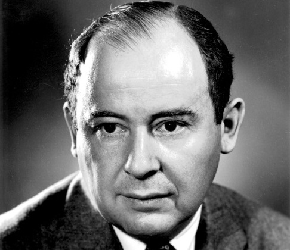

폰 노이만
출생 : 1903. 12. 28 오스트리아
사망 : 1957. 02. 18 (향년 53세)
헝가리 출신으로 미국에서 활동하며 컴퓨터 중앙처리장치의 내장형 프로그램을 처음 고안한 수학자, 물리학자이다.
양자 역학, 함수 해석학, 집합론, 위상수학, 컴퓨터 과학, 수치해석, 경제학, 통계학 등 여러 분야에 걸쳐 다양한 업적을 남겼다.
제2차 세계대전이 터지자 핵폭탄 개발계획인 맨해튼 프로젝트에 참여했다. 원자폭탄의 개발과정에 깊이 개입하면서 컴퓨터 개발의 역사에 커다란 자취를 남기게 된다. 당시 원자폭탄과 관련된 다양한 모의실험을 위해 빠른 속도로 계산할 수 있는 컴퓨터가 필요했기 때문이다.
노이만이 제안한 것은 바로 ‘프로그램 내장형 컴퓨터’다. 노이만은 1944년 에니악(ENIAC) 개발에 참여하다가 컴퓨터에 다른 일을 시키려면 전기회로를 모두 바꿔줘야 하는 불편함을 발견했다. 이 문제를 해결하기 위해 그는 프로그램 내장방식이란 개념을 제시한 것이다. 이때 고안한 방식은 오늘날에도 거의 모든 컴퓨터 설계의 기본이 되고 있다.
